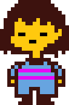
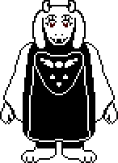
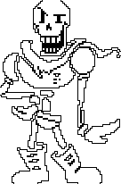
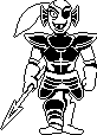
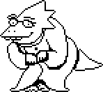
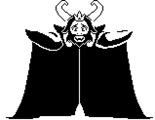

 * In this section, you'll read about the various characters that are in the game. Once again, to avoid spoilers, not everything will be listed but this section will contain some minor spoilers.
Frisk

Frisk is the playable character and main protagonist of the game.
After Frisk falls into the Underground, they go on a journey to
return to the surface. Frisk is the eighth and final human to fall
into the Underground after travelling to Mount Ebott.
Depending on the actions they take, Frisk can be seen as merciful
and kind or merciless and violent. Some NPCs highlight Frisk's
kindness, understanding, and grace at the end of the game. Frisk
will always listen and only prevents player input when they follow
another characters' instructions, such as when Sans tells them to
hide behind the conveniently-shaped lamp.
Toriel

Toriel is the second character that you encounter in the game. She
guides the protagonist through the Ruins.
Toriel acts as a motherly figure and cares deeply for the
protagonist.
Sans
Sans is the brother of Papyrus and a major character in the game. He
first appears in Snowdin Forest after you exits the Ruins. When he
talks to you, his dialogue is in the font, Comic Sans.
Sans is a lazy skeleton who enjoys making puns and playing pranks on
his friends.
Papyrus

Papyrus the brother of Sans and is also a major character in
Undertale. His main goal is to capture a human so he can become a
member of the Royal Guard, and finally have friends and popularity.
When he talks to you, his dialogue is in the font, Papyrus.
Undyne

Undyne is monster with fish features that leads the Royal Guard. She
is tasked to kill any human that falls into the Underground.
Undyne is very passionate in everything she does and is unwavering
in her beliefs.
Alphys

Dr. Alphys is a scientist who lives in the west of Hotland in her
lab. She is the Royal Scientist, a title given to her by ASGORE.
She is a shy, nerdy loner and is very passionate about certain
aspects of human culture.
ASGORE

ASGORE is the ruler of the Underground and its inhabitants,
monsters. He is the ex-husband of Toriel and serves as the
antagonist of the game.
ASGORE is a kind and quiet, often upbeat monster who enjoys
gardening. Before he fights the protagonist, he allows them
to finish any tasks left in the Underground and seems quite
reluctant to fight. His goal is to gain enough human souls to
break the barrier and allow monsters to leave the Underground.